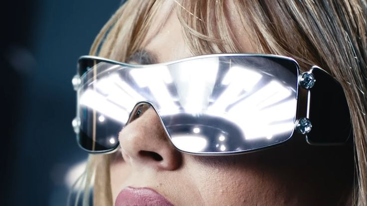

¿Tenés
alguna duda?
Contacto · Preguntas frecuentes
Contacto
Preguntas frecuentes
Es un festival de un solo artista: TINI. Con tres escenarios en simultáneo, instalaciones inmersivas y un recorrido por toda su carrera. No es un recital convencional, es una experiencia de día completo.
La experiencia se desarrolla durante todo el día, desde la apertura del predio hasta el cierre del show principal. El tiempo estimado es de 6 a 8 horas dentro del predio.
El acceso es único, no se permite el reingreso al predio una vez que se abandona. Planificá bien tu jornada para aprovechar al máximo la experiencia.
Sí, FUTTTURA es apto para todo público. Los menores de 14 años deben ingresar acompañados por un adulto responsable con DNI.
Las entradas se venden exclusivamente a través de Full Ticket Argentina (fullticket.com.ar). No existen puntos de venta físicos ni canales alternativos oficiales.
No se permite el ingreso con bebidas alcohólicas, botellas de vidrio, cámaras profesionales ni drones. El predio cuenta con controles de seguridad en todos los accesos.
Sí. Tecnópolis cuenta con accesos y sectores especiales para personas con discapacidad. Para coordinar asistencia específica, escribinos a través del formulario.